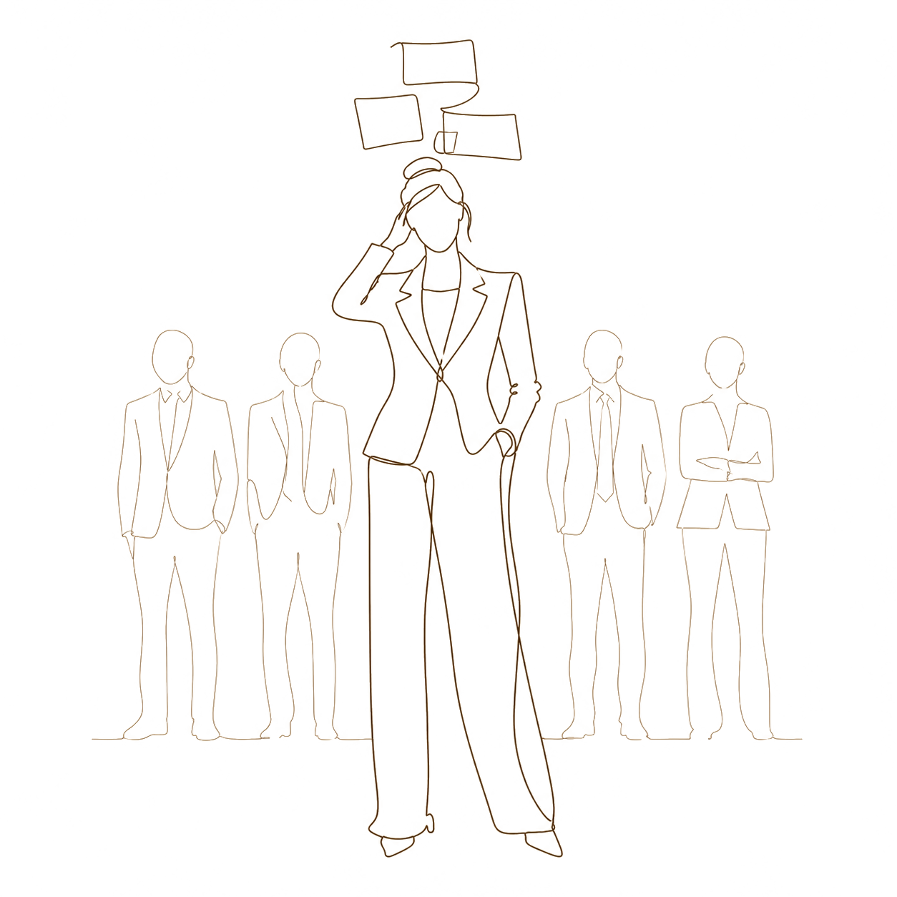
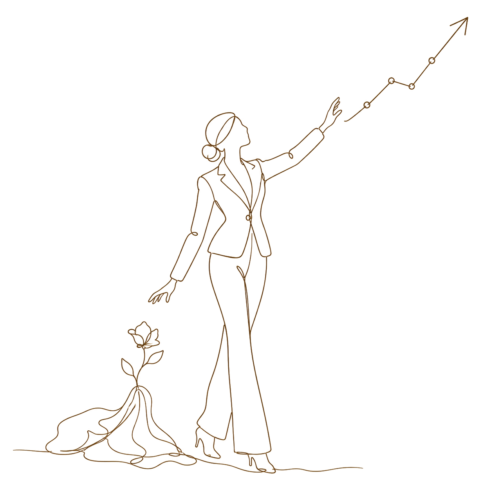
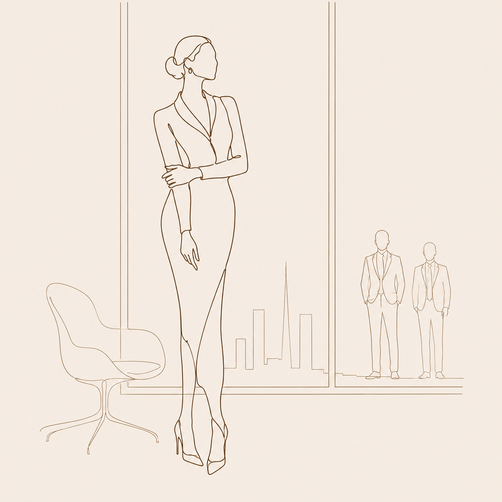
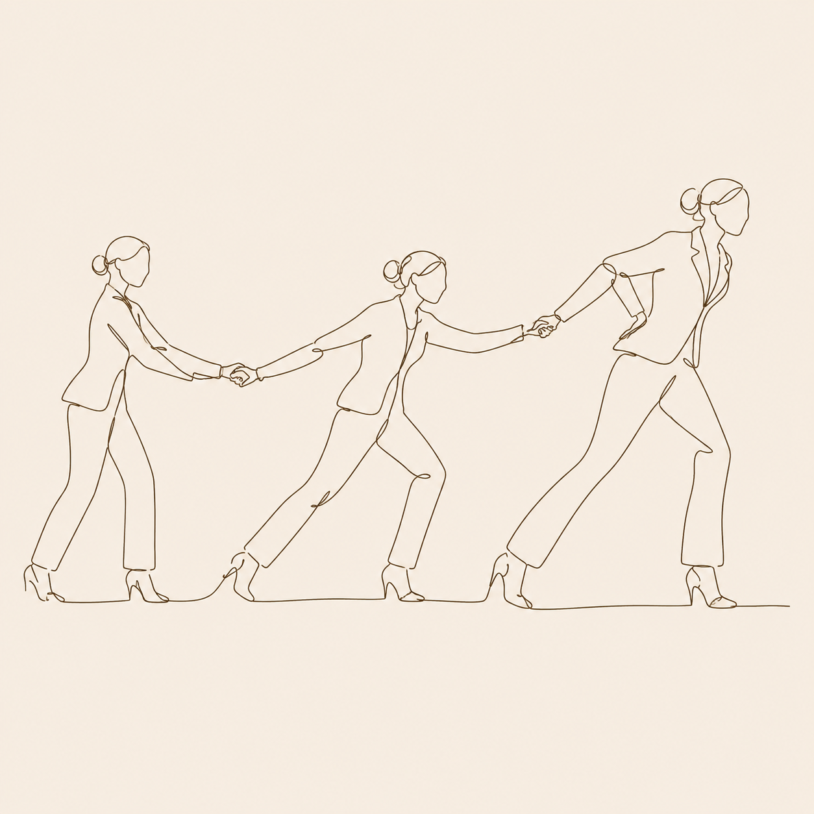
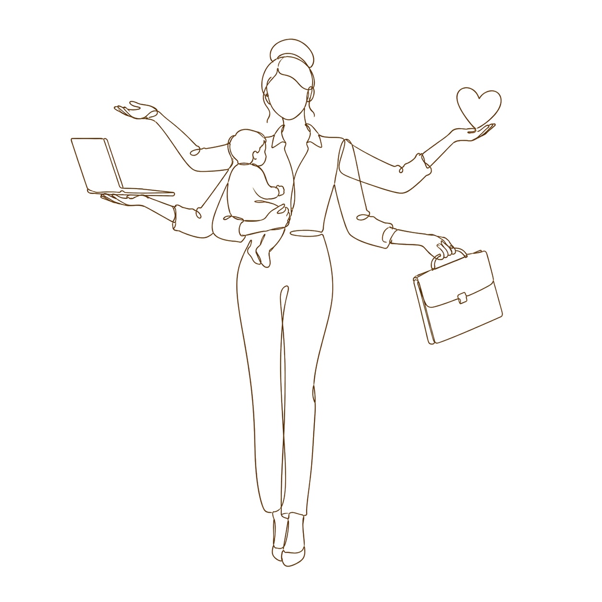
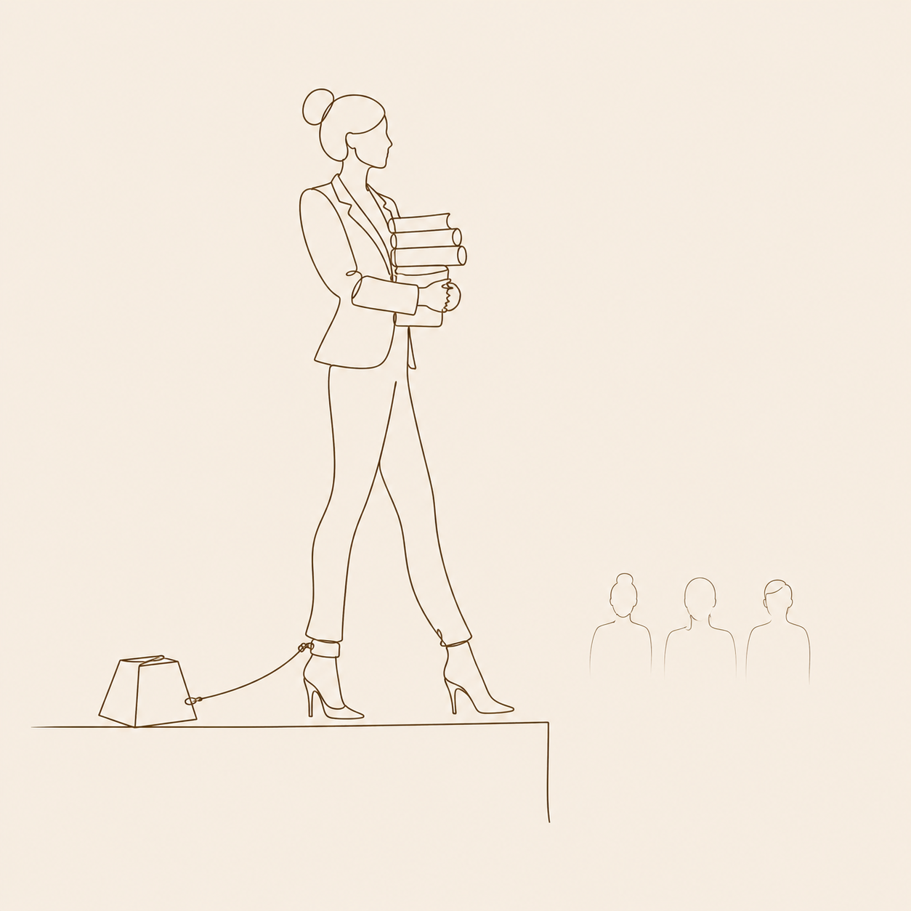
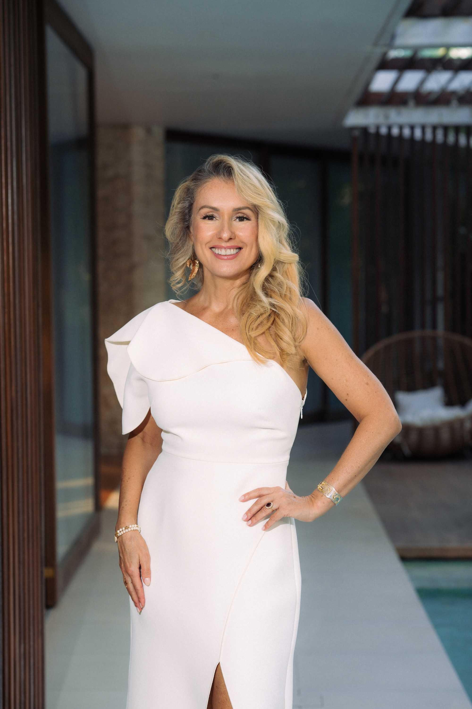

Руководите командой
На вас лежит ответственность за высокие результаты и стандарты компании. Но за их поддержание вам приходится платить своей энергией и временем для себя.

Для реализованных женщин,
которые умеют достигать результатов,
но устали жертвовать ради этого
своей женской природой.
На вас лежит ответственность за высокие результаты и стандарты компании. Но за их поддержание вам приходится платить своей энергией и временем для себя.

Вы хотите роста, развития и нового масштаба в своём деле. Но не готовы жертвовать ради этого своей женственностью и жизнью вне работы.

Вы хотите встретить мужчину своего уровня и построить с ним глубокие отношения. Но не готовы упрощать себя, притворяться слабой и снижать свои стандарты.

Вы авторитет в своей сфере и ведёте за собой других личным примером. Но сейчас период, где ваш ресурс почти исчерпан, и вам самой нужна опора.

Вы жонглируете ролями – мама, жена, руководитель, профессионал. Но за всеми этими ролями не остаётся времени и места для самой себя.

Вы накопили большой опыт и чувствуете, что пора этим делиться. Но когда доходит до того, чтобы проявляться, чего-то словно не хватает.


Строя карьеру в хедж-фонде, а затем развивая свой бизнес и управляя командой, я столкнулась с ключевым противоречием: чем выше поднимался уровень ответственности, тем больше становился уровень стресса.
За каждым новым результатом стояла потеря энергии и связи с собой как с женщиной. Тогда мне казалось – это цена за масштаб.
За десять лет практики и поиска решения этого противоречия родилась «Алхимия Женщины». Это метод, который позволяет одновременно расти в масштабе и становиться мягче, женственнее, свободнее. Это кульминация моего опыта реализации по-женски.
«Алхимия» дала мне то, что раньше казалось несовместимым:
Секрет «Алхимии» – не в том, чтобы замедлиться или больше отдыхать. Это технология, позволяющая расти в масштабе, не накапливая напряжение, а наоборот – увеличивая свою пропускную способность.
Эта программа не для всех. Реальную пользу она принесёт только тем женщинам, которые уже состоялись – как личность, как профессионал, как руководитель – и кто сейчас стоит на пороге нового уровня.
Если сейчас ваша цель – масштабно раскрыть свой женский потенциал, где ответственность, деньги и влияние идут рука об руку с чувственностью, глубиной и мягкостью, – то эта программа для вас.
«Алхимия» – это встреча силы, женственности и духовности, благодаря которой жизнь обретает целостность, многомерность и глубину.
Алхимия начинается не с целей и мотивации, а с восстановления ресурса. Женщине, которая годами жила в режиме достижения, важно сперва освободиться от накопленных напряжений в теле и научиться переключать свою нервную систему в режим расслабления и наслаждения жизнью. Через серию практик мы заземляемся, утончаем восприятие и активируем свой нижний центр, чтобы тело могло пропускать больший объём энергии.
Есть категория женщин, которые никогда не откажутся от проявления своего внутреннего масштаба. В Алхимии мы не пытаемся быть проще и отказываться от своих амбиций. Мы развиваем волю и внимание, но делаем это не за счёт фокуса и усилий, а за счёт развития магнетизма, интуиции и уважения к своим ритмам. Мы учимся делать больше и качественнее меньшими усилиями.
Женщина, привыкшая быть ответственной за всё, в отношениях по инерции пытается либо заслужить внимание, либо управлять партнёром, чтобы чувствовать себя безопасно. Но настоящее счастье в любви женщина проживает, когда её сердце открыто и она настолько соединена со своей природой, что мужчина ощущает её присутствие в своей жизни как самый драгоценный подарок.
Анкета – пятнадцать минут. Восемь вопросов о том, что вы уже построили и где сейчас упираетесь. Елизавета читает каждую лично и отвечает в течение 48 часов. Если есть резонанс – пригласит на собеседование. Если нет – скажет прямо.